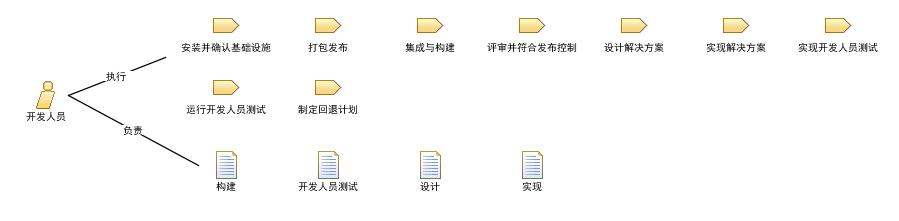

| 角色：开发人员 |
 |
|
关系
 |
||
| 其他执行 | ||
|---|---|---|
| 修改 |
|
|
人员配备
| 技能 | 此角色需要以下的知识、技能和能力：
In addition, to create a visual model of the system, the person in this role needs the ability to render the design in the Unified Modeling Language (UML). |
|---|---|
| 分配方法 | 承担此角色的人员可能有特定技术领域的特殊技能，但除此之外，还应该广泛的了解与其他技术团队成员共同工作所涉及的所有技术。 即使在最小的团队中，他们也需要共同工作创建技术解决方案。在小的、敏捷的团队中，此角色经常是共享的，即他们往往还承担了其它的角色。 参见指南：Staffing a Project 以了解更多关于需要几个团队成员承担此角色的信息。 参见指南：Self-Organize Work Assignments 以了解更多关于需要几个团队成员承担此角色的信息。 |
更多信息
This program and the accompanying materials are made available under the |